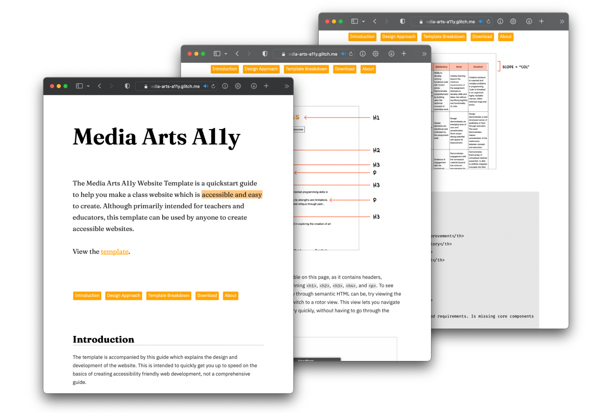

Media Arts A11y
Website template for media art educators and teachers to easily create accessible, a11y friendly websites
Role
Designer and Developer
People

Media Arts A11y Website
The Media Arts A11y Website Template is a quickstart guide to help educators make a class website which is accessible and easy to create. Although primarily intended for teachers, this template can be used by anyone to create accessibility friendly websites. The template can be downloaded as a .zip file or remixed as a project on Glitch or Github. The template is accompanied by this guide which explains the design and development of the website. This is intended to quickly get you up to speed on the basics of creating accessibility friendly web development, not a comprehensive guide.
Visit the website template here and download or remix it here.
The project was conceptualised by Xin Xin, and its design was driven by conversations with Claire Kearney-Volpe, Shannon Finnegan, Chandler McWilliams, and Kate Hollenbach.